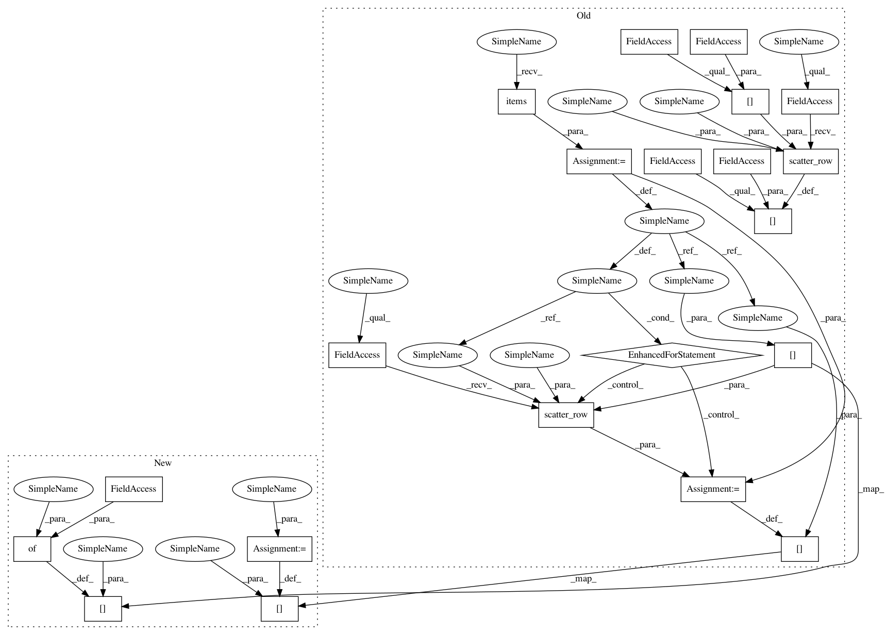

6105e441426f97f31d96c54d6f35830028c2b3f6,python/dgl/graph.py,DGLGraph,set_e_repr,#DGLGraph#Any#Any#Any#,146
Before Change
else:
eid = self.cached_graph.get_edge_id(u, v)
if isinstance(h_uv, dict):
for key, val in h_uv.items():
self._edge_frame[key] = F.scatter_row(self._edge_frame[key], eid, val)
else:
self._edge_frame[__REPR__] = F.scatter_row(self._edge_frame[__REPR__], eid, h_uv)
def set_e_repr_by_id(self, h_uv, eid=ALL):
Set edge(s) representation by edge id.
After Change
else:
eid = self.cached_graph.get_edge_id(u, v)
if isinstance(h_uv, dict):
self._edge_frame[eid] = h_uv
else:
self._edge_frame[eid] = {__REPR__ : h_uv}
def set_e_repr_by_id(self, h_uv, eid=ALL):
Set edge(s) representation by edge id.
In pattern: SUPERPATTERN
Frequency: 3
Non-data size: 21
Instances
Project Name: dmlc/dgl
Commit Name: 6105e441426f97f31d96c54d6f35830028c2b3f6
Time: 2018-08-22
Author: minjie.wang@nyu.edu
File Name: python/dgl/graph.py
Class Name: DGLGraph
Method Name: set_e_repr
Project Name: dmlc/dgl
Commit Name: 6105e441426f97f31d96c54d6f35830028c2b3f6
Time: 2018-08-22
Author: minjie.wang@nyu.edu
File Name: python/dgl/graph.py
Class Name: DGLGraph
Method Name: set_e_repr_by_id
Project Name: dmlc/dgl
Commit Name: 6105e441426f97f31d96c54d6f35830028c2b3f6
Time: 2018-08-22
Author: minjie.wang@nyu.edu
File Name: python/dgl/graph.py
Class Name: DGLGraph
Method Name: set_n_repr